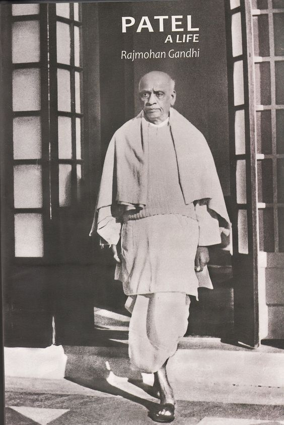
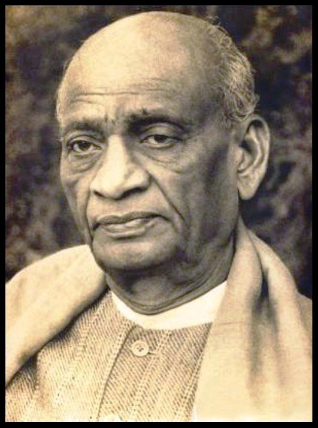
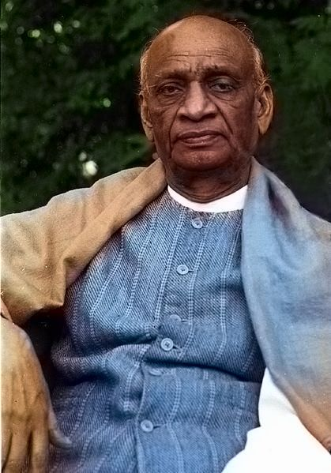

Patel was born into a self-sufficient landowning family of the Leva Patidar caste. Reared in an atmosphere of traditional Hinduism, he attended primary school at Karamasad and high school at Petlad but was mainly self-taught. Patel married at the age of 16, matriculated at 22, and passed the district pleader’s examination, which enabled him to practice law. In 1900 he set up an independent office of district pleader in Godhra, and two years later he moved to Borsad. As a lawyer, Patel distinguished himself in presenting an unassailable case in a precise manner and in challenging police witnesses and British judges. In 1908 Patel lost his wife, who had borne him a son and daughter, and thereafter remained a widower. Determined to enhance his career in the legal profession, Patel traveled to London in August 1910 to study at the Middle Temple. There he studied diligently and passed the final examinations with high honours.
Patel, however, was no revolutionary. In the crucial debate over the objectives of the Indian National Congress during the years 1928 to 1931, Patel believed (like Gandhi and Motilal Nehru, but unlike Jawaharlal Nehru and Subhas Chandra Bose) that the goal of the Indian National Congress should be dominion status within the British Commonwealth—not independence. In contrast to Jawaharlal Nehru, who condoned violence in the struggle for independence, Patel ruled out armed revolution, not on moral but on practical grounds. Patel held that it would be abortive and would entail severe repression. Patel, like Gandhi, saw advantages in the future participation of a free India in a British Commonwealth, provided that India was admitted as an equal member. He emphasized the need to foster Indian self-reliance and self-confidence, but, unlike Gandhi, he did not regard Hindu-Muslim unity as a prerequisite for independence.
In September 1917, Patel delivered a speech in Borsad, encouraging Indians nationwide to sign Gandhi's petition demanding Swaraj – self-rule – from Britain. A month later, he met Gandhi for the first time at the Gujarat Political Conference in Godhra. On Gandhi's encouragement, Patel became the secretary of the Gujarat Sabha, a public body that would become the Gujarati arm of the Indian National Congress. Patel now energetically fought against veth – the forced servitude of Indians to Europeans – and organised relief efforts in the wake of plague and famine in Kheda. The Kheda peasants' plea for exemption from taxation had been turned down by British authorities. Gandhi endorsed waging a struggle there, but could not lead it himself due to his activities in Champaran. When Gandhi asked for a Gujarati activist to devote himself completely to the assignment, Patel volunteered, much to Gandhi's delight. Though his decision was made on the spot, Patel later said that his desire and commitment came after intense personal contemplation, as he realised he would have to abandon his career and material ambitions.
In the 1946 Indian provincial elections, the Congress won a large majority of the elected seats, dominating the Hindu electorate. However the Muslim League led by Muhammad Ali Jinnah won a large majority of Muslim electorate seats. The League had resolved in 1940 to demand Pakistan – an independent state for Muslims – and was a fierce critic of the Congress. The Congress formed governments in all provinces save Sindh, Punjab, and Bengal, where it entered into coalitions with other parties.


